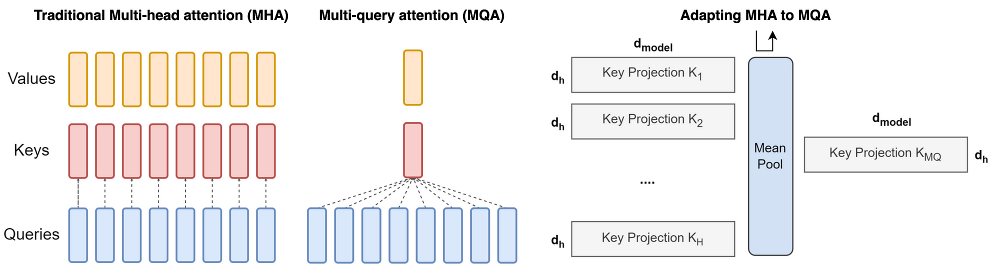

什么是 Multi-Query Attention?
- by @karminski-牙医

(image from medium.com/towards-data-science)
多查询注意力（Multi-Query Attention）是 Transformer 解码器的优化版本，通过共享键/值投影来显著降低内存消耗，特别适合自回归生成任务。
工作原理
在标准多头注意力基础上进行关键修改：所有注意力头共享同一组键（K）和值（V）的投影矩阵，仅保留查询（Q）的独立投影。公式如下：
$$ \text{MultiQuery}(Q, K, V) = \text{Concat}(\text{head}_1, \ldots, \text{head}_h)W^O $$
其中每个 $\text{head}_i$ 计算为：
$$ \text{head}_i = \text{Attention}(QW_i^Q, KW^K, VW^V) $$
$W_i^Q \in \mathbb{R}^{d_{model}\times d_k}$ 保持独立，而 $W^K, W^V \in \mathbb{R}^{d_{model}\times d_k}$ 被所有头共享。
核心机制
- 键值共享：所有注意力头共享同一组 K/V 投影矩阵，仅保留 Q 的独立投影
- 内存优化：自回归解码时只需缓存单组 K/V 矩阵，显存占用降低为原始 MHA 的 $1/h$
优点
- 参数效率：投影矩阵参数量从 $4hd_kd_{model}$ 降为 $hd_kd_{model} + 2d_kd_{model}$（减少约 75%）
- 解码加速：KV 缓存量减少 h 倍，在长序列生成（如 2048 tokens）时显著降低内存带宽压力
- 硬件友好：共享的 K/V 投影产生更规整的内存访问模式，提升 GPU/TPU 利用率
缺点
- 容量限制：共享 K/V 投影削弱了模型对不同表示子空间的捕捉能力，可能影响生成质量
- 训练挑战：需要更谨慎的参数初始化来补偿表示能力的损失
- 工程复杂度：共享投影引入跨头依赖，增加分布式计算的同步开销
与 MHA/GQA 的对比
| 特性 | Multi-Head (MHA) | Multi-Query (MQA) | Grouped-Query (GQA) |
|---|---|---|---|
| 键值投影共享 | 无 | 所有头共享同一 K/V 投影 | 分组内共享 K/V 投影 |
| 参数量 | $4hd_kd_{model}$ | $(h + 2)d_kd_{model}$ | $(h + 2g)d_kd_{model}$ |
| 解码显存占用 | $2bd_{model}L$ | $2bd_kL$ | $2bgd_kL$ |
| 模型质量 | 最优 | 基线模型 90%-95% | 接近 MHA (98%-99%) |
| 典型应用场景 | 预训练 | 低内存推理场景 | 生产环境部署 |
Refs
Demystifying GQA — Grouped Query Attention for Efficient LLM Pre-training